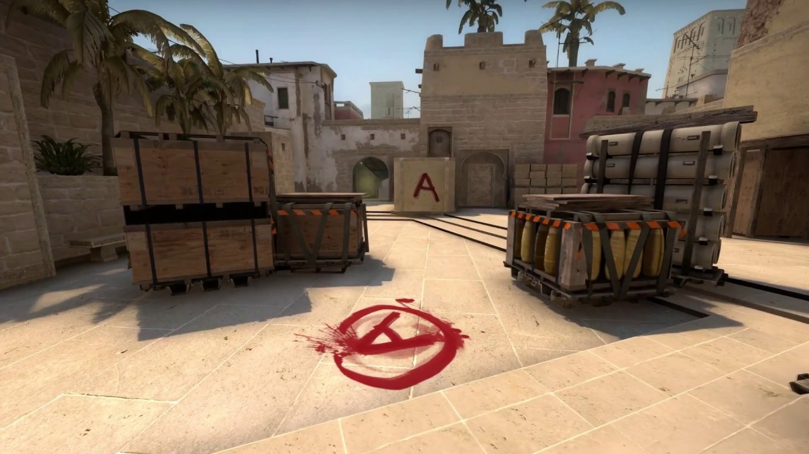
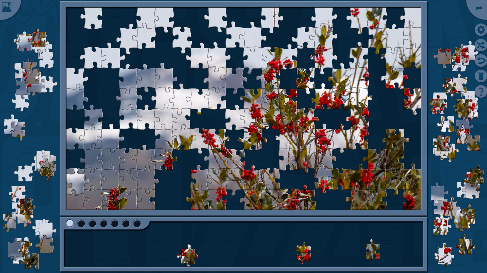
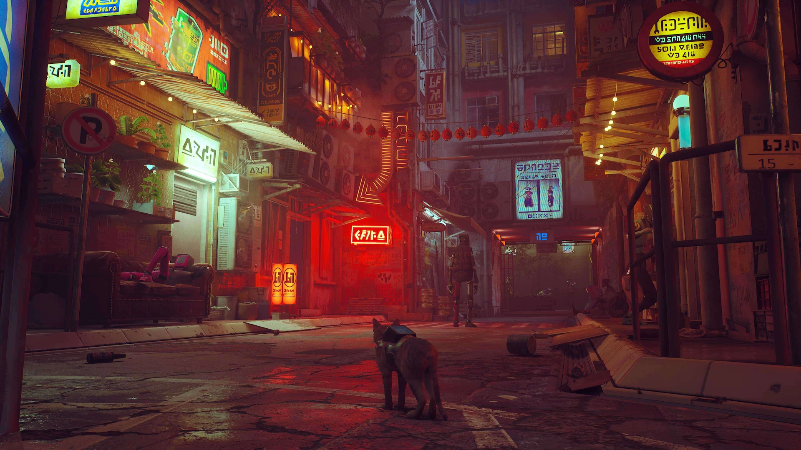
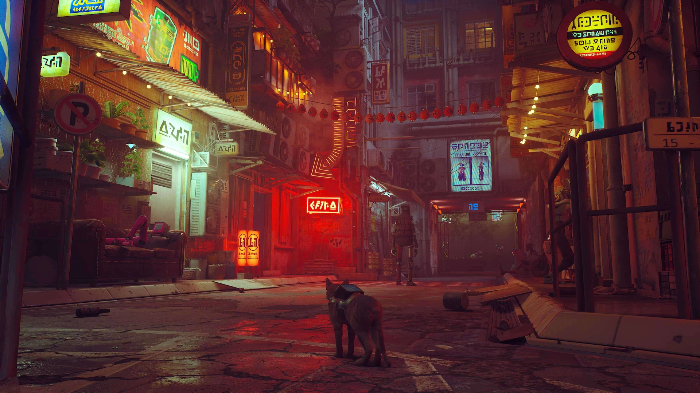

Un joc sandbox este un joc video care ofera jucatorilor un grad mare de creativitate cu care să interactioneze, de obicei fara niciun scop prestabilit sau, alternativ, cu un obiectiv pe care jucatorii si-l stabilesc singuri.
Minecraft este unul dintre jocurile sandbox si ofera jucatorilor o lume in care pot explora, construi, folosi resursele pentru a construi, astfel utilizandu si creativitatea.
RTS este un gen de jocuri video in care un jucător se lupta cu inamicii, se confrunta cu provocari de mediu sau atinge un obiectiv in timp ce alte personaje, jucatori si NPC-uri se joaca simultan.
Hearthstone este un joc de tip RTS in care jucatorii sunt nevoiti sa adopte o strategie in functie de actiunile inamicilor, astfel incat sa castige jocul de carti.
Jocurile video cu împușcături sunt un subgen al jocurilor video de acțiune în care se pune accent aproape în întregime pe înfrângerea inamicilor personajului folosind armele date jucătorului.
Counter-Strike: Global Offensive este un shooter multiplayer first-person in care cele 2 echipe se lupta pentru a castiga meciul, jucatorii cu cele mai multe infrangeri primind o recompensa la finalul meciului.

RPG ul este un joc în care jucătorii preiau roluri de personaje imaginare care se angajează în aventuri, de obicei într-un anumit cadru fantastic supravegheat de un arbitru.
Undertale este un joc RPG in care controlezi un om care cade sub pământ în lumea monștrilor.
Jocurile video de simulare sunt o categorie diversă de jocuri video, în general concepute pentru a simula îndeaproape activitățile din lumea reală.
Stardew Valley este un joc video in care este simulata viata de fermier, in care creezi relatii cu satenii, cresti animale si plante, dar de asemenea poti explora mina sau alte locatii anexe.

Jocurile video puzzle alcatuiesc un gen larg de jocuri video care pun accent pe rezolvarea puzzle-urilor. Tipurile de puzzle-uri pot testa abilitățile de rezolvare a problemelor, inclusiv logica, rezolvarea secvenței, și completarea cuvintelor.
Jocul Jigsaw este o digitalizare a puzzleului traditional, astfel putand fi jucat online, pe dispozitivele electronice.

Un joc de actiune si aventură poate fi definit ca un joc cu un amestec de elemente dintr-un joc de actiune si unul de aventură,ce contine in special elemente cruciale, cum ar fi puzzle-urile.Jocurile de tip aventura-actiune necesita multe dintre aceleasi abilitati ca si jocurile de actiune, dar ofera si o poveste, numeroase personaje, un sistem de inventar, dialog.
Stray este un joc 3rd person, in care joci drept o pisica separata de familie ce trece prin diverse provocari intr un oras strain pentru a scapa si a isi regasi familia.
 

Survival horror se refera la un subgen de jocuri video de supravietuire care includ elemente de joc horror. Personajul jucatorului este vulnerabil si dezarmat, ceea ce pune accent pe rezolvarea puzzle-urilor si evaziune, in defavoarea jucatorului ce nu poate adopta o strategie ofensiva.
Five Nights At Freddy's(FNAF) este un joc survival horror in care jucatorul este un paznic, ce trebuie sa urmareasca pe camerele video animatronicii ce vor sa-l atace, iar in acelasi timp sa fie atent sa nu i se termine bateria.

Un joc de platforma este un subgen de jocuri video de actiune in care obiectivul principal este de a muta personajul jucatorului intre diferite puncte dintr-un mediu. Jocurile de tip platformer se caracterizeaza prin niveluri cu teren neuniform si platforme suspendate la diverse inalimi care necesita sarituri si urcari pentru a le traversa.
Fireboy & Watergirl este un joc de tip platformer, destinat a fi jucat in 2 persoane, in care fiecare dintre jucatori trebuie sa apese butoane, impinga manete, mute platforme, astfel incat coechipierii se ajuta reciproc pentru a trece nivelul iar spiritul de echipa este nelipsit.

Jocul ritmic este un gen de joc video de actiune cu tematica muzicala care provoaca simtul ritmului unui jucator. Jocurile din acest gen se concentreaza de obicei pe dans sau pe interpretarea simulata a instrumentelor muzicale si impun jucatorilor sa apese butoane intr-o secventa dictata pe ecran.
Friday Night Funkin' este un joc ritmic in care personajul principal se dueleaza cu inamici prin intermediul muzicii pentru a castiga iubirea.